Curious Being
Mount Nokogiri Quarry: Ancient Machines or Hand Tools?
Tina · 21 min · watch on YouTube · summarised 2026-08-23
Mount Nokogiri is a volcanic tuff mountain on the Bōsō Peninsula, barely 329 m high, whose straight cliff faces are entirely man-made 00:20–00:31. It was worked from the Edo period until the 1980s, and the quantity of rock removed is large enough that the mountain's present shape is the quarry. Every worked surface, from the summit down, carries the same mark: evenly spaced parallel slanted striations in horizontal courses 01:44–01:55.
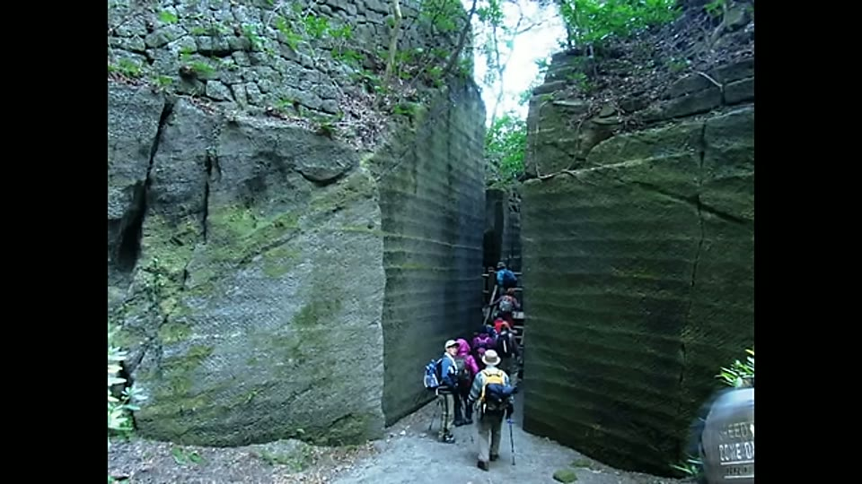
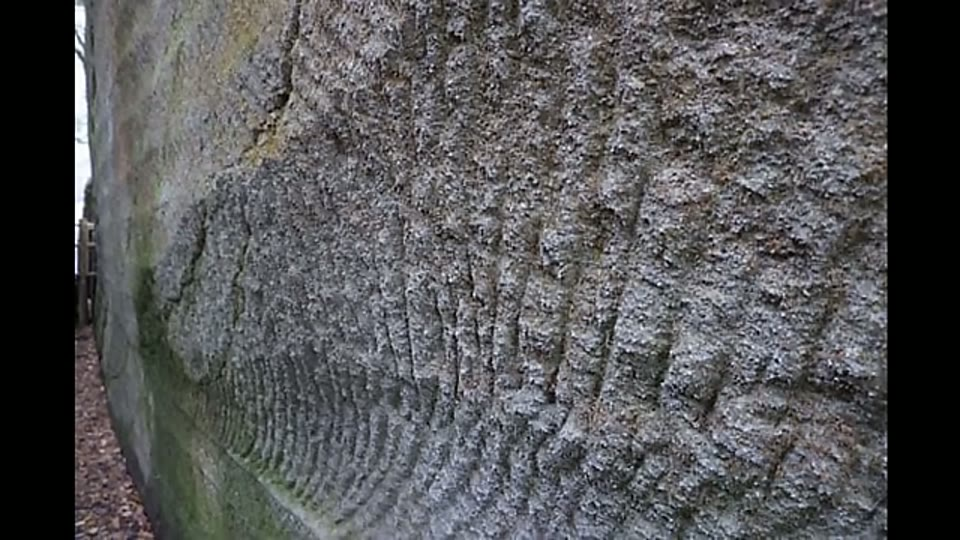
Every worked surface of the mountain carries the same courses of parallel slanted striations, from the summit to the foot of the cliffs.
The video is unusual in structure and says so at the outset 02:16–02:28. Rather than argue a case, she states that after researching it she thinks both possibilities are live, and sets out to argue each in turn.
The case that something is wrong here
The documented Edo quarries look nothing like it 06:12–07:30. Hundreds of quarries on the Izu Peninsula and the Sagami coast supplied stone for the rebuilding of Edo Castle across the 250 years of the Tokugawa shogunate. They are smaller, mostly flat or on gentle slopes, and they were worked by feather and wedge: a line of keyholes smashed into the rock, wooden wedges driven in and wetted so they swelled and split the block, sometimes with a groove cut first to control the fracture. The surfaces this leaves are flat splits, and the sites are littered with half-split blocks and keyhole rows.
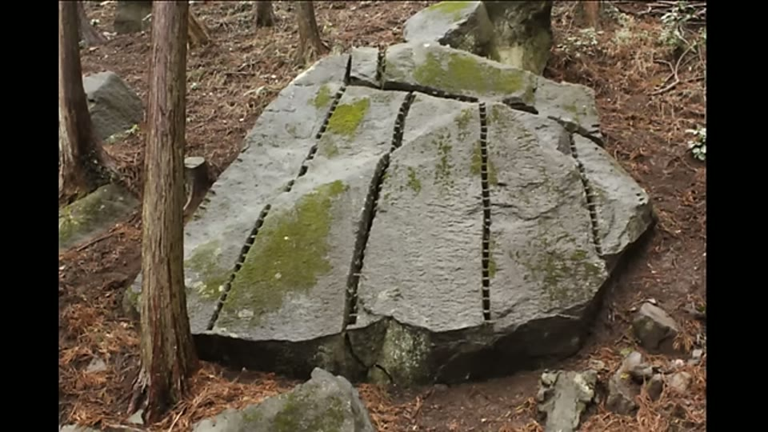
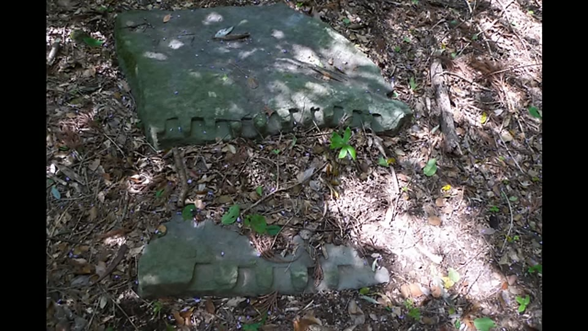
The documented Edo-period quarries were worked by feather and wedge, which leaves a line of keyholes and a flat split - nothing like the striated courses at Nokogiri.
Those quarries are signed, and Nokogiri is not 04:25–04:54. Each daimyō assigned a quarrying quota marked their stone with a clan symbol — kokuin — plus mason's marks, so that shogunate officials could tally output and so that no other clan could claim the stone. She notes the incentive was real: quarrying was dangerous, injuries frequent, and theft worth guarding against. These marks are found across Edo quarries and sometimes on the castle walls themselves. At Nokogiri there are no daimyō symbols and no mason's signatures.
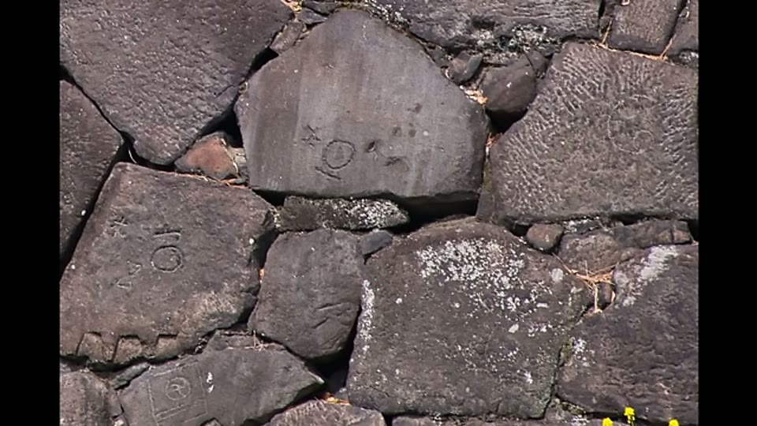
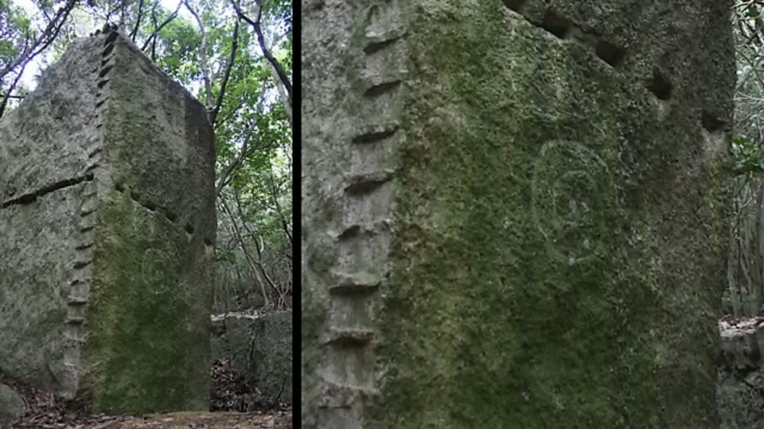
Quarries that supplied Edo Castle signed their stone - clan symbols and mason's marks, cut for quota accounting and against theft. Nokogiri carries none.
And there is no record of it [05:36–06:00, 08:41–09:23]. Nokogiri is closer to Tokyo than most of the supplying quarries and its stone was considered desirable, yet it appears in no documentation as a source for Edo Castle, across two and a half centuries. Work at that scale should have impressed anyone who saw it.
The excavation-marks-versus-dressing-marks distinction 10:44–11:56. This is the sharpest idea in the video and it is a general one. Dressing marks are decorative surface finishes cut into stonework for appearance. Excavation marks are the residue of getting stone out of the bedrock. A worker separating stone uses the fastest method available and has no reason to make it tidy, because roughing and dressing come later, on the block, elsewhere. Her point is that the Nokogiri marks are on the abandoned bedrock and are as uniform as dressing — and there is no reason to spend labour dressing a face you are walking away from, unless producing marks that uniform cost nothing.
She adds a check on this 12:02–12:27: walls and buildings built from Nokogiri stone carry chisel marks on only some blocks, and those marks are not of the same consistency — so the uniformity is not simply a by-product of block extraction showing up on the finished stone.
The curved strokes 17:09–17:49. On one wall she finds large, densely spaced curved marks of matching curvature. Using the horizontal courses as a ruler — a worker in the frame stands shorter than six rows — she measures the strokes at roughly the height of a standing person, which she argues is well outside a controlled pickaxe swing. She suggests a cutting machine struck the wall in passing.
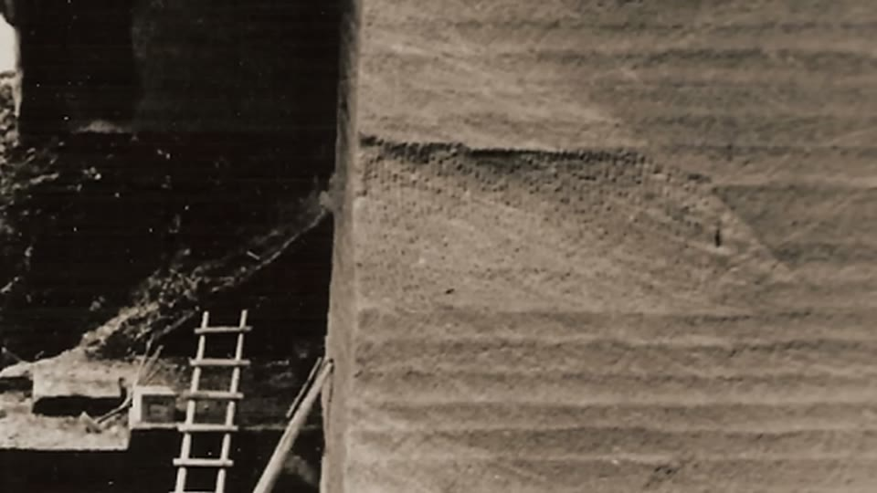
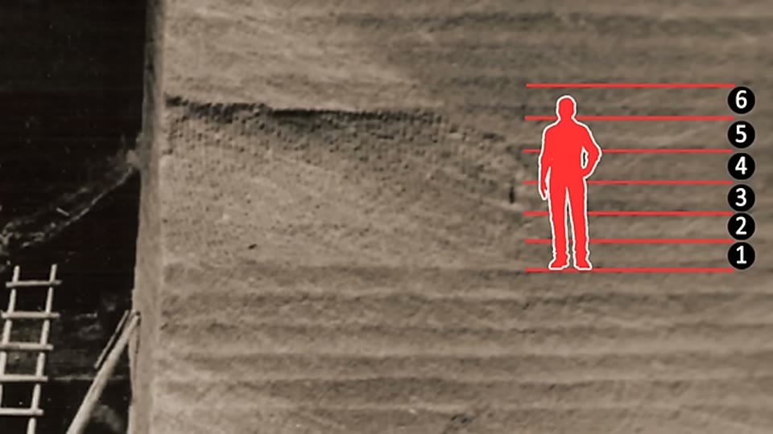
Curved strokes she measures at roughly the height of a standing person, which she argues is outside the range of a controlled pickaxe swing.
Alongside this she puts Nokogiri beside modern rotary drum cutters, which cut stone in horizontal courses with uniform lines between them 09:36–10:05, and notes that even those machines do not always produce marks as fine.
The case that it is simply hand work
She then argues the other way, and does not soften it.
Trenching is a standard method 12:41–13:30. Beyond wedge splitting, masons cut separation trenches on four sides of a square base with pickaxes, then wedge the block free at the bottom. Greek and Roman quarries show the resulting grid of block scars, with pickaxe marks left on the trench walls. Experienced masons keep a swing consistent — she shows old-time German masons dressing a millstone in regular parallel strokes — and because blocks come out top down, layer by layer, the horizontal courses follow automatically.
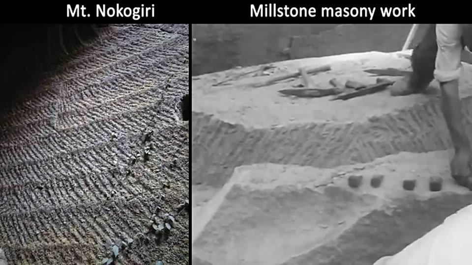
Her own counter-example: experienced masons swinging by hand produce regular parallel marks, which is the mundane explanation for the uniformity.
The photographic evidence is against the machine reading 14:31–15:38. Two inscriptions from previous quarry companies survive on one wall at Nokogiri. The lower is from the Suzuki family, who worked the site until 1985 using modern powered saws; the upper is probably later than 1950, because it is absent from a photograph she dates to the 1950s. That photograph shows the same wall being worked with no machines at all — masons digging trenches with pickaxes and splitting blocks from the bedrock with wedges. Decades of that work produced the cliff, with saw marks from the later mechanised operation at the bottom.
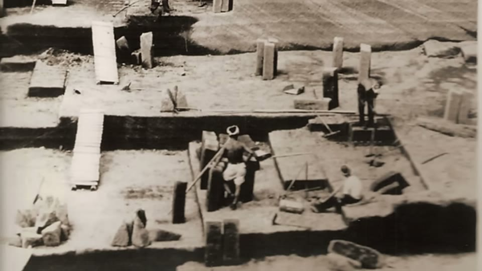
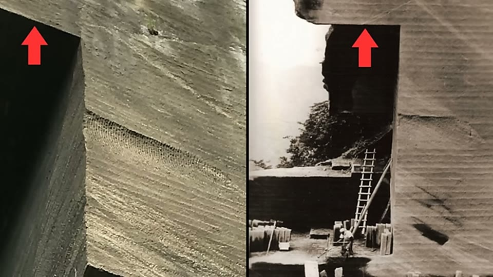
The same wall, before machines: masons trenching with pickaxes and splitting with wedges, which is the work she says produced the cliff.
She states the conclusion this supports plainly: generations of masons with hand tools can remove unthinkable quantities of rock and reshape a mountain, and there is nothing mysterious about the cliffs.
Her one reservation is that she could not find clear photographs zoomed into the earlier marks on that specific wall to compare them with the rest of the mountain 15:52–16:05, and that searching in Japanese she found no video anywhere demonstrating this slanted cutting technique, in a country that documents its crafts thoroughly 19:12–20:10.
What she concluded later
The question is left open here — the video ends by asking the viewer to decide 20:10–20:45.
It did not stay open. In A Method to Decipher Ancient Machine Marks from Hand Tools, published eighteen months after this one, she names Mount Nokogiri directly among the Japanese quarries whose marks sweep direction in mid-course, between courses and at inner corners, flaring outward from the corner lines in a herringbone pattern — the signature she uses there for hand work. She concludes that the Japanese tuff quarries, Nokogiri included, were hand excavated with modern pickaxes on soft rock, and uses them as contrast cases against Longyou.
The argument that changed the answer is the one absent from this video: not the uniformity of the marks, but whether their angle survives an inner corner.
What you can check yourself
- Whether Edo-period quarries carry daimyō and mason's marks while Nokogiri does not is a survey of inscriptions, and both bodies of evidence are in the open.
- Whether Nokogiri appears in Edo Castle construction records is an archival question with a yes or no answer.
- The 1950s photograph shows an identifiable wall, and she matches it to the modern one on screen. Anyone can check the match.
- The two quarry-company inscriptions are dated and one belongs to a firm that operated until 1985.
- The length of the curved strokes against the horizontal courses can be measured off her own frame, since the courses and a person appear together.
- Tuff is soft — a porous rock formed from compacted volcanic ash. That is stated in the video and is standard geology.
- Whether the striation angle holds through an inner corner is a photograph, and it is the test that later decided the case.
What the video does not settle
- It does not weigh the two sides. Both are argued and no criterion is offered for choosing between them, which leaves the strongest section — the 1950s photograph of the same wall being cut by hand — sitting unresolved beside the machine reading.
- Absence of records is not dated evidence. No mundane explanation for the documentary gap is canvassed — that the site was worked privately, outside the quota system, or for local rather than shogunal building — and any of these would account for missing daimyō marks as readily as antiquity would.
- The hardness argument that carries her other sites does not apply here. Tuff is soft, and she says so; the difficulty of the work therefore rests on scale and consistency alone.
- The dressing/excavation distinction assumes uniform marks cost extra effort. If a technique produces regular marks as a by-product, the argument dissolves — and a mason swinging the same tool the same way is exactly such a technique, as her own German millstone footage shows.
- The curved strokes rest on one wall, and she reports she could not obtain clear photographs of the earlier marks on it for comparison.
- The absence of demonstration videos is treated as meaningful without asking whether an extraction technique abandoned by the 1980s would be demonstrated at all, when what Japanese craft documentation preserves is splitting, which she found plenty of.
- Her own close-up shows strokes running in more than one direction. In the frame used to illustrate the marks as uniform and accurate, a broad fan of curved strokes meets near-vertical strokes along a diagonal on a single face. The claim of consistency is made over footage that does not obviously show it, and the direction question is never raised here at all.
- Nothing is measured. Stroke spacing, angular deviation and depth consistency are all judged by eye, at both sites and in every comparison.
See also
A Method to Decipher Ancient Machine Marks from Hand Tools — the later video that sets out the corner test and reaches a conclusion about this site.
What we have not checked
- The auto-captions mangle every proper noun. Corrected here from context: Nokogiri (rendered as NOCO Jerry, Noco jery, monoko Jerry), Edo (Ado, idol, AD), Tokugawa (tokuga, toava), daimyō (damoo, demo, tamio, Dio), kokuin (cocin), Izu (Azu), Sagami (sagami), feather and wedge (feder and vge, feter and a Ved).
- The peak whose profile gives the mountain its name is rendered "the hell Peak point"; this is almost certainly Jigoku-nozoki, but the name is inferred, not heard.
- The mountain is on the Bōsō Peninsula in Chiba — stated here from general knowledge, not from the video, which never names the location beyond "Japan".
- The dating of the photograph to the 1950s is hers and is hedged in the video itself ("this alleged 1950s photo").
- The Suzuki family firm name is as spoken ("Suzuki shur Aman family") and only the surname is legible.